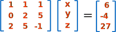
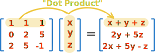
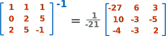
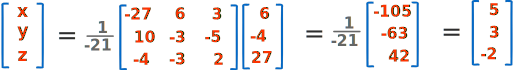
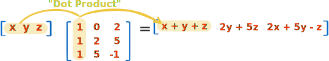
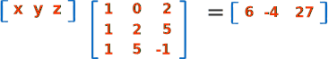
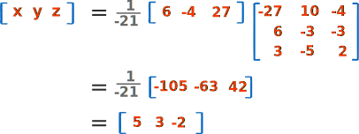

Solving Systems of Linear Equations Using Matrices
Hi there! This page is only going to make sense when you know a little about Systems of Linear Equations and Matrices, so please go and learn about those if you don't know them already!
The Example
One of the last examples on Systems of Linear Equations was this one:
Example: Solve
- x + y + z = 6
- 2y + 5z = −4
- 2x + 5y − z = 27
We then went on to solve it using "elimination" ... but we can solve it using Matrices!
Using Matrices makes life easier because we can use a computer program (such as the Matrix Calculator) to do all the "number crunching".
But first we need to write the question in Matrix form.
In Matrix Form?
OK. A Matrix is an array of numbers, right?

A Matrix
Well, think about the equations:
| x | + | y | + | z | = | 6 |
| 2y | + | 5z | = | −4 | ||
| 2x | + | 5y | − | z | = | 27 |
They could be turned into a table of numbers like this:
| 1 | 1 | 1 | = | 6 | ||
| 0 | 2 | 5 | = | −4 | ||
| 2 | 5 | −1 | = | 27 |
We could even separate the numbers before and after the "=" into:
| 1 | 1 | 1 | 6 | |
| 0 | 2 | 5 | and | −4 |
| 2 | 5 | −1 | 27 |
Now it looks like we have 2 Matrices.
In fact we have a third one, which is [x y z]:

Why does [x y z] go there? Because when we Multiply Matrices the left side becomes:

Which is the original left side of our equations above (you might like to check that).
The Matrix Solution
We can write this:
like this:
AX = B
where
- A is the 3x3 matrix of x, y and z coefficients
- X is x, y and z, and
- B is 6, −4 and 27
Then (as shown on the Inverse of a Matrix page) the solution is this:
X = A-1B
What does that mean?
It means that we can find the values of x, y and z (the X matrix) by multiplying the inverse of the A matrix by the B matrix.
So let's go ahead and do that.
First, we need to find the inverse of the A matrix (assuming it exists!)
Using the Matrix Calculator we get this:

(I left the 1/determinant outside the matrix to make the numbers simpler)
Then multiply A-1 by B (we can use the Matrix Calculator again):

And we are done! The solution is:
x = 5,
y = 3,
z = −2
Just like on the Systems of Linear Equations page.
Quite neat and elegant, and the human does the thinking while the computer does the calculating.
Just For Fun ... Do It Again!
For fun (and to help you learn), let us do this all again, but put matrix "X" first.
I want to show you this way, because many people think the solution above is so neat it must be the only way.
So we will solve it like this:
XA = B
And because of the way that matrices are multiplied we need to set up the matrices differently now. The rows and columns have to be switched over ("transposed"):

And XA = B looks like this:

The Matrix Solution
Then (also shown on the Inverse of a Matrix page) the solution is this:
X = BA-1
This is what we get for A-1:

In fact it is just like the Inverse we got before, but Transposed (rows and columns swapped over).
Next we multiply B by A-1:

And the solution is the same:
x = 5, y = 3 and z = −2
It didn't look as neat as the previous solution, but it does show us that there is more than one way to set up and solve matrix equations. Just be careful about the rows and columns!